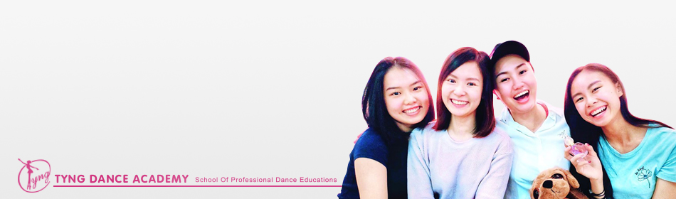

About us
Tyng Dance Academy [TDA] is a prestigious dance education and professional performing arts learning center located in Kuching, Sarawak. Since its establishment in year 2007, the academy had earned fine reputation among students and authorities alike in the industry by providing professional learning facilities as well as unique friendly culture that warms the passion of dance among students and teachers.
One of the strength of TDA refers to the offering of quality dance syllabus certified by worldwide well-known dance councils such as Commonwealth Society of Teachers of Dancing [CSTD] from Australia and Imperial Society of Teachers of Dancing from United Kingdom [ISTD]. In link, TDA students are all accredited directly from these international dance bodies where such certification allows students to pursue for advanced performing arts edification and professional dance career in future.
Another reason of TDA’s success represents the top-notch artistic personnel who share the same passion towards performing arts education. All classes are taught by competent instructors who are skilled and qualified in both dance training and performance experience. With the enthusiasm to offer superior dance-tutelage, TDA artistic faculty had continuously developing their teaching skills from time to time: attending seminars, joining competitions, participating short-courses and much more, all of these are due to fulfill students’ dance potential and assist them to achieve the goal of dance in future.
With the great passion to share the love of dance, TDA had been expanding class capacity and dance courses to satisfy the increasing needs for students. Two large professional studios with well-equipped sprung floors, mirrors and sound systems, it is yet enough for students to dance safely and expressively in all dance genres offered by TDA. In fact, there are three progressive dance syllabuses available in the academy currently:
- Classical Ballet
- Latin dance
- Pop dance